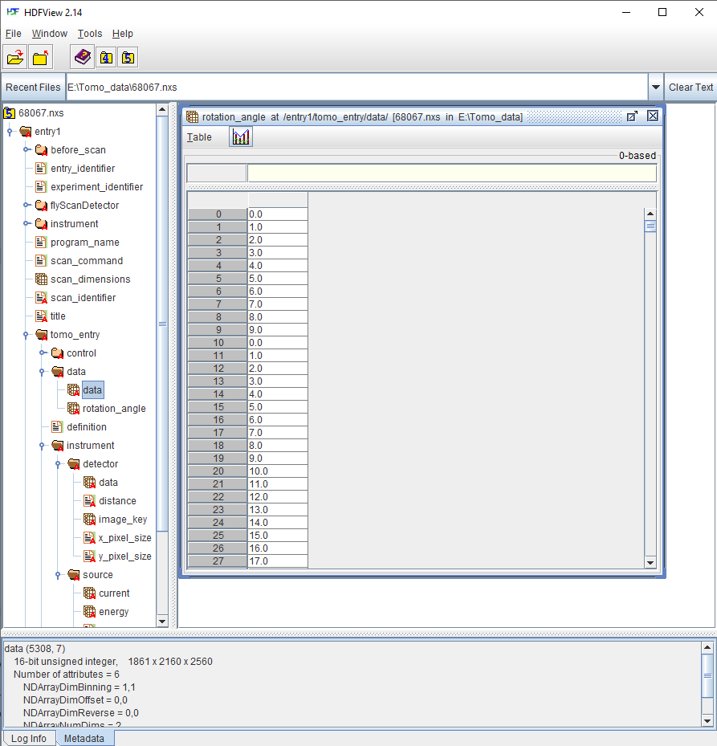
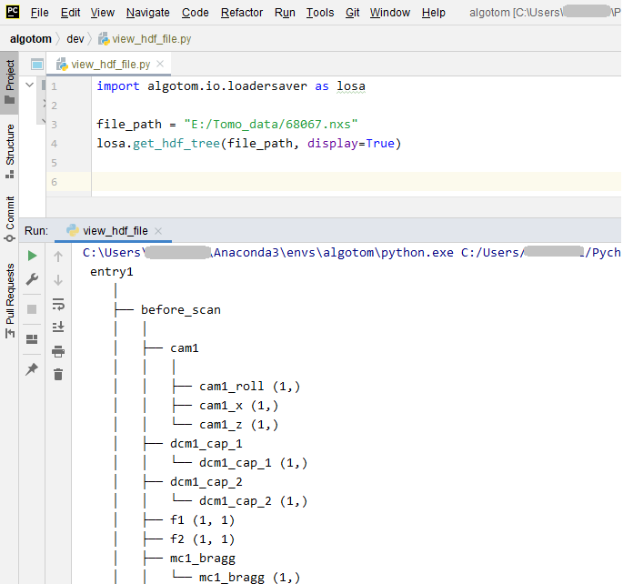

1.2. Common data format at synchrotron facilities
Two types of data format often used at most of synchrotron facilities are tiff and hdf. Hdf (Hierarchical Data Format) format allows to store multiple data-sets, multiple data-types in a single file. This solves a practical problem of collecting all data associated with an experiment such as images from a detector, stage positions, or furnace temperatures into one place for easy of management. More than that, hdf format allows to read/write subsets of data to memory/disk. This capability enables to process a large size dataset using a normal computer. Tiff format is used because it is supported by most of image-related software and it can store 32-bit grayscale values.
1.2.1. Hdf format
How to view the structure of a hdf file
To work with a hdf file, we need to know its structure or how to access its contents. This can be done using a lightweight software such as Hdfview (Fig. 1.2.1). Version 2.14 seems stable and is easy-to-install for WinOS. List of other hdf-viewer software can be found in this link. A wrapper of the hdf format known as the nexus format is commonly used at neutron, X-ray, and muon science facilities. We can use the same software and Python libraries to access both hdf and nxs files.
Fig. 1.2.1 Viewing the structure of a nxs/hdf file using the Hdfview software.
Another way to display a tree view of a hdf/nxs file is to use an Algotom’s function as shown below.
Fig. 1.2.2 Displaying the tree view of a nxs/hdf file using an Algotom’s function.
How to load datasets from a hdf file
Utilities for accessing a hdf/nxs file in Python are available in the h5py library. To load/read a dataset to a Python workspace, we need a key, or path, to that dataset in a hdf/nxs file.
import h5py file_path = "E:/Tomo_data/68067.nxs" # https://doi.org/10.5281/zenodo.1443568 hdf_object = h5py.File(file_path, 'r') key = "entry1/tomo_entry/data/data" tomo_data = hdf_object[key] print("Shape of tomo-data: {}".format(tomo_data.shape)) #>> Shape of tomo-data: (1861, 2160, 2560)An important feature of a hdf format is that we can load subsets of data as demonstrated below.
import psutil mem_start = psutil.Process().memory_info().rss / (1024 * 1024) projection = tomo_data[100, :, :] mem_stop = psutil.Process().memory_info().rss / (1024 * 1024) print("Memory used for loading 1 projection : {} MB".format(mem_stop - mem_start)) #>> Memory used for loading 1 projection : 11.3828125 MB mem_start = psutil.Process().memory_info().rss / (1024 * 1024) projections = tomo_data[102:104, :, :] mem_stop = psutil.Process().memory_info().rss / (1024 * 1024) print("Memory used for loading 2 projections : {} MB".format(mem_stop - mem_start)) #>> Memory used for loading 2 projections : 21.09765625 MBUsing functions of h5py’s library directly is quite inconvenient. Algotom’s API provides wrappers for these functions to make them more easy-to-use. Users can load hdf files, find keys to datasets, or save data in the hdf format by using a single line of code.
import algotom.io.loadersaver as losa file_path = "E:/Tomo_data/68067.nxs" keys = losa.find_hdf_key(file_path, "data")[0] # Find keys having "data" in the path. print(keys) tomo_data = losa.load_hdf(file_path, keys[0]) # Load a dataset object print(tomo_data.shape)
Notes on working with a hdf file
When working with multiple slices of a 3d data, it’s faster to load them into memory chunk-by-chunk then process each slice, instead of loading and processing slice-by-slice. Demonstration is as follows.
import timeit import scipy.ndimage as ndi import algotom.io.loadersaver as losa file_path = "E:/Tomo_data/68067.nxs" tomo_data = losa.load_hdf(file_path, "entry1/tomo_entry/data/data") chunk = 16 t_start = timeit.default_timer() for i in range(1000, 1000 + chunk): mat = tomo_data[:, i, :] mat = ndi.gaussian_filter(mat, 11) t_stop = timeit.default_timer() print("Time cost if loading and processing each slice: {}".format(t_stop - t_start)) #>> Time cost if loading and processing each slice: 10.171918900000001 t_start = timeit.default_timer() mat_chunk = tomo_data[:, 1000:1000 + chunk, :] # Load 16 slices in one go. for i in range(chunk): mat = mat_chunk[i] mat = ndi.gaussian_filter(mat, 11) t_stop = timeit.default_timer() print("Time cost if loading multiple-slices: {}".format(t_stop - t_start)) #>>Time cost if loading multiple-slices: 0.10050070000000133Parallel loading datasets from a hdf file is possible. However, this feature may be not enabled for WinOS. When working with large datasets using a small RAM computer, we may have to write/read intermediate results to/from disk as hdf files. In such cases, it is worth to check tutorials on how to optimize hdf I/O performance.
1.2.2. Tiff format
This is a very popular file format and supported by most of image-related software. There are 8-bit, 16-bit, and 32-bit format. 8-bit format can store grayscale values as 8-bit unsigned integers (range of 0 to 255 = 2 8 - 1). 16-bit format can store unsigned integers in the range of 0 to 65535 (2 16 - 1). 32-bit format is used to store 32-bit float data. Most of image viewer software can display a 8-bit or 16-bit, but not 32-bit tiff image. Users may see a black or white image if opening a 32-bit tiff image using common photo viewer software. In such cases, Imagej or Fiji software can be used.
Fig. 1.2.3 Opening a 32-tiff image using Photos software (a) and Imagej software (b).
Sometimes users may want to extract a 2D slice of 3D tomographic data and save the result as a tiff image for checking using ImageJ or photo viewer software. This can be done as shown below.
import algotom.io.loadersaver as losa
file_path = "E:/Tomo_data/68067.nxs"
tomo_data = losa.load_hdf(file_path, "entry1/tomo_entry/data/data")
losa.save_image("E:/Tomo_data/Output/proj.tif", tomo_data[100, :, :])
If tomographic data are acquired as a list of tiff files, it can be useful to convert them to a single hdf file first. This allows to extract subsets of the converted data for reconstructing a few slices or tweaking artifact removal methods before performing full reconstruction.
import numpy as np
import algotom.io.loadersaver as losa
proj_path = "E:/Tomo_data/68067/projections/"
flat_path = "E:/Tomo_data/68067/flats/"
dark_path = "E:/Tomo_data/68067/darks/"
output_file = "E:/Tomo_data/68067/tomo_68067.hdf"
# Load flat images, average them.
flat_path = losa.find_file(flat_path + "/*.tif*")
flat = losa.load_image(flat_path[0])
for i in range(1, len(flat_path)):
flat = (flat + losa.load_image(flat_path[i])) * 0.5
# Load dark images, average them.
dark_path = losa.find_file(dark_path + "/*.tif*")
dark = losa.load_image(dark_path[0])
for i in range(1, len(dark_path)):
dark = (dark + losa.load_image(dark_path[i])) * 0.5
# Generate angles
num_angle = len(losa.find_file(proj_path + "/*.tif*"))
angles = np.linspace(0.0, 180.0, num_angle)
# Save tiffs as a single hdf file.
losa.convert_tif_to_hdf(proj_path, output_file, key_path="entry/projection",
option={"entry/flat": np.float32(flat),
"entry/dark": np.float32(dark),
"entry/rotation_angle": np.float32(angles)})
Reconstructed slices from tomographic data are of 32-bit data, which often saved as 32-bit tiff images for easy to work with using analysis software such as Avizo, Dragon Fly, or Paraview. Some of these software may not support 32-bit tiff images or the 32-bit data volume is too big for computer memory. In such cases, we can rescale these images to 8-bit tiffs or 16-bit tiffs. It is important to be aware that rescaling causes information loss. The global extrema or user-chosen percentile of a 3D dataset or 4D dataset (time-series tomography) need to be used for rescaling to limit the loss. This functionality is available in Algotom as demonstrated below. Users can refer to Algotom’s API to know how data are rescaled to lower bits.
import algotom.post.postprocessing as post
file_path = "E:/Tomo_data/recon_68067.hdf"
output_path = "E:/Tomo_data/rescale_8_bit/"
post.rescale_dataset(file_path, output_path, nbit=8, minmax=None)